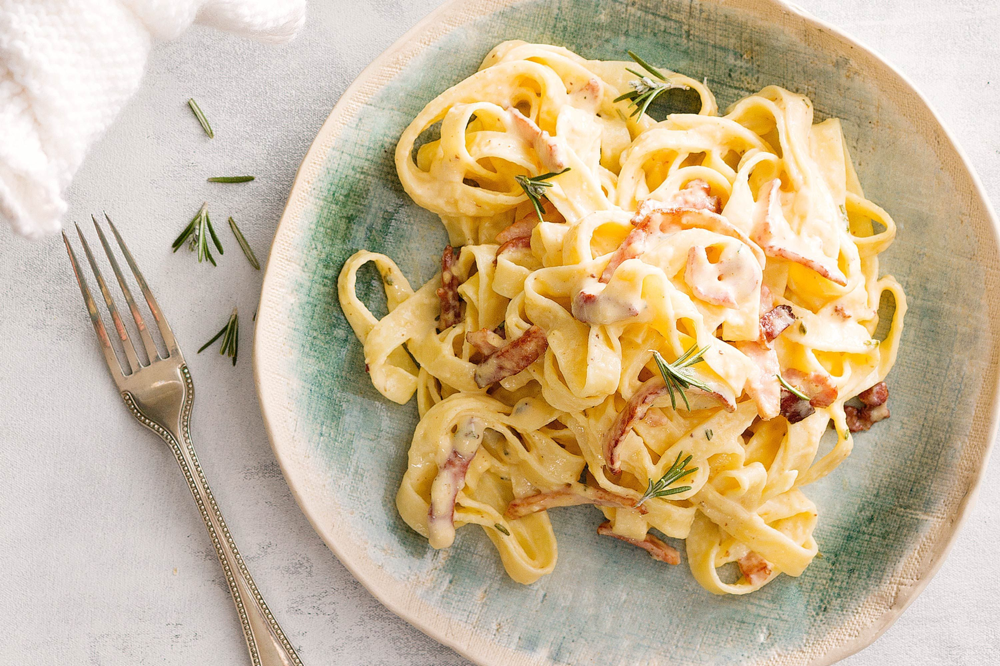

Carbonara
Home

Description
Spaghetti alla carbonara. Luscious and wonderfully indulgent, pasta carbonara takes as long to make as it does to cook the pasta.
The ingredients are simple—just spaghetti (or another long pasta), and the carbonara is made with pancetta or bacon, eggs, Parmesan, a little olive oil, salt and pepper.
The silky carbonara sauce is created when the beaten eggs are tossed with the hot pasta and a little fat from the pancetta or bacon.
Ingredients
- 1 tablespoon extra virgin olive oil or unsalted butter
- 1/2 pound pancetta or thick cut bacon, diced
- 1 to 2 garlic cloves, minced, about 1 teaspoon (optional)
- 3 to 4 whole eggs
- 1 cup grated Parmesan or pecorino cheese
- 1 pound spaghetti (or bucatini or fettuccine)
- Kosher salt and freshly ground black pepper to taste
Instructions
- Heat the pasta water
- Sauté the pancetta or bacon and garlic
- Beat the eggs and half of the cheese
- Cook the pasta
- Toss the pasta with pancetta or bacon
- Add the beaten egg mixture